Lab Assignment

Lab 1
Microcontroller

Lab 2
Analog Circuits and FFT

Lab 3
FPGA

Lab 4
Wrap Up
Microcontroller
Analog Circuits and FFT
FPGA
Wrap Up

Line Tracking

Analog Circuits and FFT

Wall Detection
Wrap Up

apg76@cornell.edu
it233@cornell.edu
km633@cornell.edu
sb883@cornell.edu
vms44@cornell.edu
This Lab was instrumental in introducing how to use the various functionalities of Arduino Uno and the Arduino IDE, as well as the GitHub repository. Our team's duty was to create a simple functional Arduino program using multiple external components and an Arduino. Finally, we assembled a robot and programmed it to perform a simple autonomous task.
Main Topics covered are as follows:
After we installed the Arduino IDE from here, we played around with it and got used to the general debugging environment.
(a) Blinking an internal LED
First part of Lab 1 was to modify the blink sketch. This could be found under Files >> Examples >> Basics >> Blink.
The Demo for the same is shown below:-
(b) Blinking an external LED
We then tested out the digital pins provided by creating a global variable LED_PIN and changing the number assigned to check each digital pin. The code is shown below:-
/* Test digital output functionality by blinking an external LED every two seconds*/
const int LED_PIN = 12; //in this case checking for digital pin 12
// the setup function runs once when you press reset or power the board
void setup() {
pinMode(LED_PIN, OUTPUT); // initialize digital pin LED_PIN as an output.
}
// the loop function runs over and over again forever
void loop() {
digitalWrite(LED_PIN, HIGH); // turn the LED on (HIGH is the voltage level)
delay(1000); // wait for a second
digitalWrite(LED_PIN, LOW); // turn the LED off by making the voltage LOW
delay(1000); // wait for a second
}
The demo for the same is shown below:-
(c) Reading the value of a potentiometer via the serial port
We used the trimmer RV1 as a resistive divider to generate an analog voltage from the 5V supply. To prevent damage to Arduino in case we made mistakes while wiring, we passed the signal through a 300 ohm resistor before feeding it into the analog input pin. This does not affect the measurement because the pin resistance to the supply rails is orders of magnitudes higher when configured as an input.
void loop() {
unsigned int reading = analogRead(ANALOG_INPUT_PIN); // take a reading
Serial.println(reading); // print to serial
delay(500); // wait half a second
}
We used the delay function to update the value only at half second intervals.This works in the approximation that analogRead() and Serial.println() are fast.
The demo is shown below:-
(d) Map the value of the potentiometer to the LED
Circuit diagram:-

The next step to this was to add the LED to everything we had so far. We were able to reuse most of what we had from the first step, but we also had to add in the LED code. In the looping function of the Arduino, we would have to first map the value that we read from the potentiometer (using the same code from above) to the range that the analogWrite(ANALOG_OUTPUT_PIN) function could work with (this could be done with a simple scaling. In our case, ANALOG_OUTPUT_PIN was pin 5, one of the PWM pins on the Arduino (since only they can output “analog” signals).
Code Snippet:-
void loop() {
unsigned int reading = analogRead(ANALOG_INPUT_PIN); // take a reading
analogWrite(ANALOG_OUTPUT_PIN, reading / 4); // set PWM duty cycle. Divide by 4 to map 0-1023 -> 0-255
}
The wiring for this part basically just was very similar to the wiring from the first part of this lab. We connected a wire from this PWM pin to the long pin of the LED and then had a 1 kOhm resistor in series with it before connecting it to GND. The wiring for the potentiometer was exactly as described in the previous section. The functionality ended up being as we had anticipated.
The demo is shown below:-(e) Map the value of the potentiometer to the servo
In addition to the analog input circuit, this time we connected one of the servos to a PWM capable pin.
Code Snippet:-
void loop() {
unsigned int reading = analogRead(ANALOG_INPUT_PIN); // take a reading
servo.write(reading / 6); // set servo speed. divide by 6 to map 0-1023 -> 0 - 180
}
Since servo.write() takes inputs in the range [0, 180], we remapped the analog reading approximately, dividing it by 6. The servo stops when the trimmer is set half-way and spins in opposite directions and at different speeds depending on which way the trimmer is turned and how far it is from the midpoint.
The demo is shown below:-(f) Assemble and run your robot
For this we used the following parts:-
When designing our line following vehicle, the main goal was to keep the center of gravity low. We started by attaching the servos with nuts and washers to the base plate, and ensured that the wheels were not only parallel to each other but also pointing to the front of the vehicle. This way the robot would not strafe sideways. Then we attached wheels with rubber rims to the servos to ensure the vehicle does not slip when accelerating. We chose the appropriate size ball bearing to keep the vehicle level. Afterwards, we attached a strip of velcro to the bottom of the base plate for the battery pack, keeping the center of mass low. Finally screwed in the arduino into the base plate, and left the bread board on top. (later in milestone 1 we changed the bread board for a smaller one and velcroed it down)
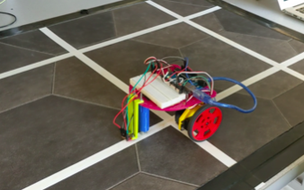(g) Driving our robot autonomously
After assembling our vehicle, we didn’t have much time to program it. At first the wheels spun in opposite directions at different speeds, causing the vehicle to turn in place. Once we figured out how the controls relate to the actual movement of the vehicle, we set both servos to spin in the same direction and were able to get it to drive forward...blindly. No robots were harmed.
The demo for autonomous movement is as follows:-In Lab 2, we implemented the required circuitry for tone detection and we wrote software to display a live-updating frequency domain plot of the audio signal picked up by the microphone. The presence of a large and easily identifiable peak corresponding to the test frequency demonstrates that we can successfully distinguish different tones. Demo video below:
To demonstrate that music will not adversely affect tone detection, we also tried alternating the tone while playing a song in close proximity. The difference in amplitude on the 950 Hz bin is clearly visible. Even if the music contains transient 950 Hz tones, we can filter those out by just looking at the duration the amplitude is above a certain threshold:
An additional video demonstrates the evolution of only the 950 Hz bin over time:
Lastly, here's a video demonstrating our analog waveform after the low-pass filter:
We also implemented a supplementary circuit: three comparators that can take in the analog signal coming from the line sensors and output a digital HIGH or LOW depending on whether the signal is above a certain adjustable threshold. This saved us three precious analog pins on the Arduino. In the video, each of the three yellow LEDs corresponds to the state of a comparator.
Starting with Lab 2, we have implemented all of our circuits on solderable protoboard shields, and we are planning to use breadboards only for prototyping. The jumpers you may see in the schematics below are necessary for testing the circuits.
Since the gain of the microphone itself can be adjusted by changing the bias resistance, we decided to use a trimmer (RV1) instead of a fixed resistor. Increasing its value proportionally increases the gain, but also increases the output resistance. Thus, we can achieve high amplitude signals right from the microphone, but only as long as we pay attention to not load it too much with the preamplifier. R1 prevents setting the bias resistance to 0 and potentially damaging the microphone. C2 couples the AC signal from the microphone to the rest of the circuit, while allowing different DC biases on either side. C1 is just a decoupling capacitor meant to provide a steady DC supply to the op-amp.
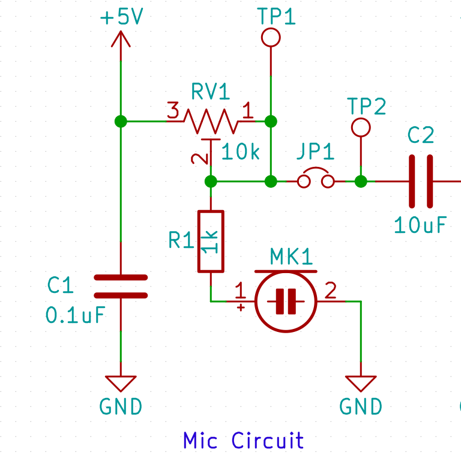For the preamplifier, we’ve gone for a noninverting single stage design. In this topology, the only load on the source is due to the biasing resistors (R2 and R3 here), which can have quite high values before any ill-effects appear. Since we are not using a dual rail supply with the op-amp, biasing to a level half-way between VCC and GND is necessary in order to obtain a good dynamic range. Voltage gain can theoretically be adjusted between 1 and 1000 in our setup by turning the trimmer RV2. We placed an extra resistor (R4), to eliminate the possibility of adjusting to a very high and unpredictable gain. Once again, we used a decoupling capacitor (C4). Regarding op-amp selection, we found that the LF353 available in lab is designed for dual-supply operation and thus is not rail-to-rail on the inputs or the output and has very strict input common mode requirements. In fact, VCM has to be higher than 2.5V, which is unacceptable for our application, and probably for everyone else who tried to use it in lab. Since good op-amps have become very cheap, we were able to just sample an LM6132 from TI, which is rail-to-rail and has a Gain-Bandwidth product far exceeding our needs.
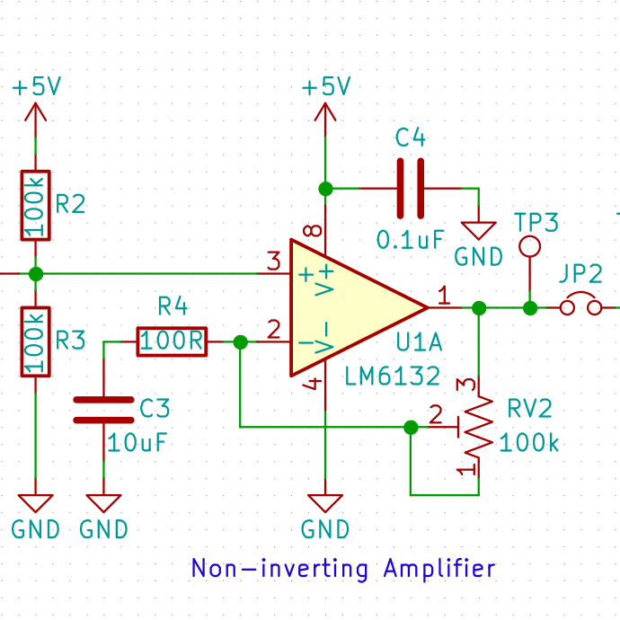Since we are doing the filtering entirely in the digital domain using the FFT, we only need an analog filter to prevent aliasing. Therefore, we chose a simple RC low-pass with a cutoff frequency of 1500 Hz and a -20 dB attenuation point at 15000 Hz. Since the FFT example code samples just fine at approximately 37 kHz, more than twice our stopband, we are safe from aliasing. However, to increase the bin resolution, we have been sampling half as fast for Lab 2, but we will increase the sampling rate once we implement an DFT algorithm that can handle N > 256. We are actually planning to calculate only the correct DFT bin directly from the definition, because the complexity is O(n), as opposed to the FFT’s O(n log n). This will also enable us to select an N such that the competition frequency falls right into the center of the bin, where the sensitivity is maximum. N does not have to be a power of two as in the case of the FFT.
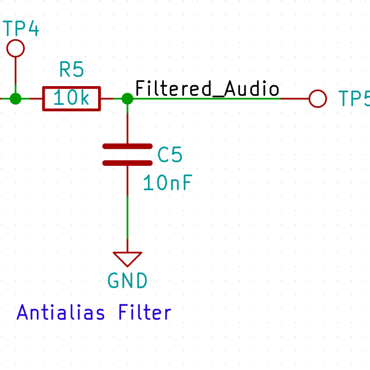On the Arduino side, we just modified the example FFT code and made it more readable by replacing the hex number register assignments with predefined macros. A more detailed description of the code is present in the comments. Here’s an example for a macro:
DIDR0 = (1 << ADC0D);
versus
DIDR0 = 0x40;
Since we couldn’t find a MATLAB option for reading big endian binary data from serial, we had to send the bytes individually, in little endian format:
Serial.write((uint8_t)(fft_lin_out[bin_num]));
Serial.write((uint8_t)(fft_lin_out[bin_num] >> 8));
We also changed the output mode from logarithmic to linear because we thought this would make the frequency domain plot easier to interpret. On the host side, we made a live-updating plot of the Arduino data using MATLAB plots. This can be done by setting the X and Y data sources to variables that can be assigned new values, and calling “refereshata” and “drawnow” whenever the plot needs to be updated. Since we just send the raw data without any delimiters for simplicity, we have to hold the Arduino in reset until the MATLAB code is running in order to ensure that the frequency bins are synchronized to the plot. We chose to limit the amount of bins displayed to the range 0 – 5 kHz, because the rest of the data is in the roll-off of the analog filter and is therefore useless anyway.
while 1
amplitudes = fread(myserialport, FFT_N / 2, 'int16');
refreshdata;
drawnow;
end
For the extra circuit, we decided to implement three comparators like the one shown below. Again, we tried to use the LF353, but in this case, the input common mode requirements made it absolutely useless. As soon as the common mode voltage dropped below 2V, the output just jumped to some mid-rail voltage regardless of which input was higher. Therefore, we sampled a TLV3704 from TI. This was not the best choice however, because the output impedance is so high that connecting indicator LEDs sags the high level to 2.5V even when using 10k series resistors. The Arduino doesn’t recognize 2.5V as high, so we had to disconnect the LEDs when we started to actually use the circuit. We will remedy this mistake by sampling some other comparator IC – replacing the current one is easy because we are using sockets on our protoboards and most quad comparators are pin-compatible. Besides the bypass capacitors chosen according to the datasheet, the only important components in the circuit are the trimmers (RV1 here), which set the voltage on the noninverting input and thus the threshold. Despite being encouraged to implement a Schmitt Triggers instead of comparators, we didn’t see any advantages to that topology. We need no hysteresis because we are not implementing an edge sensitive system. We just want to know whether the sensor sees a line or not at any given time. If the output is somewhere close to the threshold and is alternatingly above or below it, it’s just the same whether the robot thinks it’s a one or a zero – the signal will become stronger shortly, when the robot either drifts out or back onto the line. We have one additional protoboard on the robot, but it only contains a debugging LED and the connections for the motors and the wall distance sensor, so it doesn’t warrant a more detailed description.
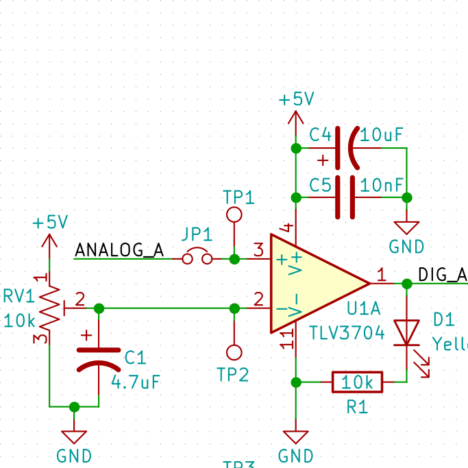View Lab 2 Code on GitHub
In this lab, we setup the basic functionality of our base station. We created a simple communication protocol between the base station’s Arduino and the FPGA, as well as programmed a display driver on our FPGA inorder to display a simple grid on a monitor using a VGA connection.
The Reason we need an FPGA DAC is that the FPGA outputs digital values on each of its pins, whereas VGA requires three analog values that correspond to each of the three colors (red, green, and blue). Specifically, each of the three analog pins that correspond to the three colors has a maximum voltage value of one volt that we can feed into it. FPGA outputs are 3.3 V digital outputs, so we needed a DAC that could convert from multiple 3.3 V digital signals into three different analog signals that ranged between 0 and 1 V.
Our FPGA outputs are as follows: there are three digital output pins on it that correspond to the red color, three more that correspond to the green color, and two more that correspond to the blue color. As the FPGA DAC was given to us during our lab section, we didn’t need to worry about the wiring. But briefly, the DAC used the appropriate resistor values for each of the digital pins (placed in series with them) on the FPGA and combined them as needed to feed into each of the analog pins on the VGA connector (the resistors would form a voltage divider that would drop the input analog voltage to the appropriate range). We were given that the monitor has a 50 Ohm internal load, so using this information, it is possible to determine the needed resistor values.
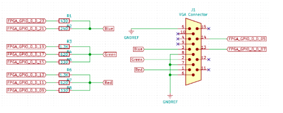For this lab we used a single pin from the Arduino that connects to the FPGA as a GPIO pin. All the Arduino does is toggle a pin between high and low. The FPGA takes this as a GPIO input and toggles the color of the maze accordingly to the pin. In the future we plan on using only 5 pins. Two pins for wall detection (wall on the left or right), 2 pins for turning (robot turned left or right), and 1 pin for (when the robot is about to move forward). If more functionality is required we still have plenty of pins on our FPGA. The FPGA will receive these inputs as GPIO pins and update the maze accordingly. For example, let’s consider when the robot is starting from an intersection. It announces to the base station it is moving forward. Then it tells the base station there is a wall to the right. The robot reaches another intersection, turns left (and tells the base station). Then it tells the base station it is moving forward again. If the base station knows the starting position of the robot and its future positions by all the turns the robot made, the base station can always calculate where the robot actually is. The base station will update the maze in between tiles, or more accurately, in between the times when the robot announces it is moving forward. We chose to use a parallel communication protocol since it would be much simpler to implement than a serial protocol and it would be faster. If we had to send the information serially we won’t be able to processor information until all information has been sent over.
One potential issue is RF interference. If the robot is attempting to tell the base station it turned right before moving forward but this packet is dropped, then the base station will miss-calculate the robots position for the rest of the run.
bool toggle = 0;
void setup() {
// put your setup code here, to run once:
pinMode(12, OUTPUT);
pinMode(LED_BUILTIN, OUTPUT);
}
void loop() {
// put your main code here, to run repeatedly:
delay(2000);
if(toggle) {
digitalWrite(12, HIGH);
digitalWrite(LED_BUILTIN, HIGH);
}
else {
digitalWrite(12, LOW);
digitalWrite(LED_BUILTIN, LOW);
}
toggle = !toggle;
}
We based our FPGA code off of the previous year’s Lab 4 template. The first step was to ensure we had a phase-locked loop (PLL) clock signal. Using logic to reduce the FPGA’s 50 MHz clock could potentially be unstable, so PLL uses the various FPGA’s clocks and ensures the clocks are kept in phase. We simply instantiated a wire for each clock frequency we may use.
The FPGA code is divided into 4 files, DEO_NANO.v , Dual_Port_RAM_M9k, IMAGE_PROCESSOR.v and VGA_DRIVER.v. DE0_NANO.v behaves as the top file and instantitates as well as connects all the modules. At the very top of DE0_NAN0.v we define screen widths and heights in pixels. We used a screen width of 630 pixels and a screen height of 480 pixels. Following that we define a few parameters that correspond to fixed colors for ease of use. We also select the correct clock frequency.
In order to calculate the address for the M9k RAM we simply take the X address (which corresponds to the x position of a pixel in an array) add it with the Y value (which corresponds to the x position of a pixel in an array) multiplied by the screen width. Also to ensure proper functionality we made our read clock slower than our write clock.
IMAGE_PROCESSOR.v currently performs no logic. We added it for future functionality. For the final lab maze drawing logic, IMAGE_PROCESSOR will receive GPIO pin signals, and update the M9k accordingly to what the robot tells the base station.
For the VGA_Driver module we simply toggled the value of the color depending on the value being read in. PIXEL_COLOR_IN is set to display white if the VGA read memory is not enabled. If it is enabled it will display either blue or green depending on GIPO_1_D[20] pin which is toggled by the FPGA. We used GPIO ports 5, 7, 9, 11, 13, 15, 17, 19, 21, 23 to connect to the VGA DAC. H_SYNC_NEG is a unique signal that tells the display the FPGA is done sending pixel values for a row, move down one row and start at the leftmost edge of the display and prepare to receive pixel values. Similarly, VGA_HSYNC_NEG is a signal to the display that all the pixel values for a frame are completed.
.PIXEL_COLOR_IN((VGA_READ_MEM_EN == 2'b11) ?
WHITE : (VGA_READ_MEM_EN == 2'b10) ? BLUE :
(VGA_READ_MEM_EN == 2'b01) ? GREEN : BLACK ) , // MEM_OUTPUT : BLUE),
In order to update the read address we find first find the read address in by adding the X coordinate position of the pixel with the Y coordinate position multiplied by the screen width. If the X coordinate is greater than the screen width -1 or the Y coordinate is greater than the Screen height-1 we set VGA_read_mem_en to display black. In order to create a grid we modulo by 30 pixels in both the X and the Y axis and dry VGA_READ_MEM_EN to display white. So there will be a white line every 30 pixels on either axis. Finally we set the VGA_READ_MEM_EN to blue or green depending on the GPIO value. The resulting grid has more than 9 by 9 intersections which is the size of the competition maze.
always @ (VGA_PIXEL_X, VGA_PIXEL_Y, GPIO_1_D[20]) begin
READ_ADDRESS = (VGA_PIXEL_X + VGA_PIXEL_Y*`SCREEN_WIDTH);
if(VGA_PIXEL_X>(`SCREEN_WIDTH-1) || VGA_PIXEL_Y>(`SCREEN_HEIGHT-1))begin
VGA_READ_MEM_EN = 2'b00;
end
else begin
if ( VGA_PIXEL_X % 30 == 0 || VGA_PIXEL_Y % 30 == 0 ||
VGA_PIXEL_X == `SCREEN_WIDTH-1 || VGA_PIXEL_Y == `SCREEN_HEIGHT-1) begin
VGA_READ_MEM_EN = 2'b11;
end
else begin
if(GPIO_1_D[20] == 0) VGA_READ_MEM_EN = 2'b01;
else VGA_READ_MEM_EN = 2'b10;
end
end
End
In order for the FPGA and Arduino to communicate properly both needed a shared ground. Furthermore, the DE0_Nano operates at 3.3 Volts while the arduino outputs 5 Volts from its digital IO pins. So we created a simple voltage divider using 330 Ohm and 680 Ohm resistor to drop the voltage down.
The pictures below shows multiple voltage dividers, as well as multiple red white and black connectors between the FPGA and the Arduino. This was testing future functionality. For the purpose of this lab, we simply used one pin. Below is the basic circuit diagram for a single pin, and the share grounds.
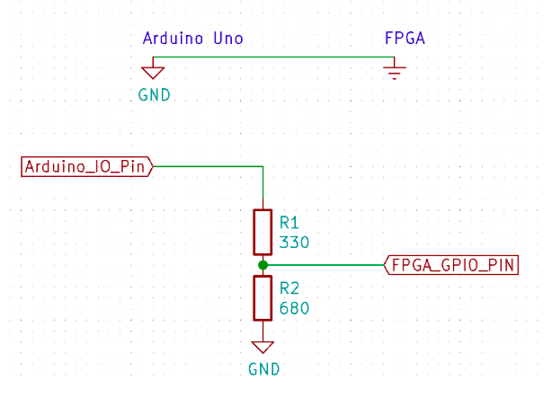 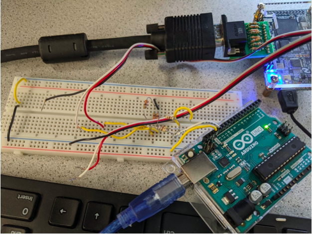
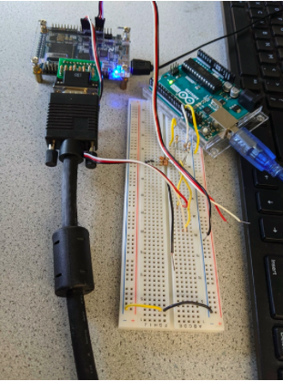
The final video demo is shown below: -
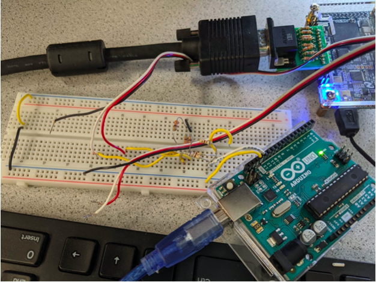
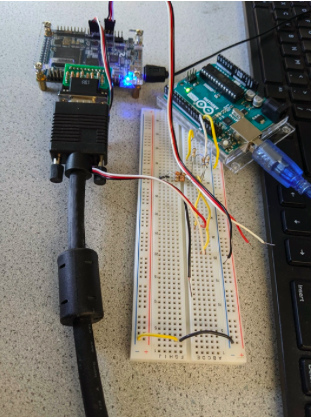
The final video demo is shown below: -
View Lab 3 Code on GitHub
In the last lab / milestone we were able to develop an efficient data scheme to store all maze information on an Arduino and additionally develop a suitable interface between the Arduino and FPGA for updating the display correctly on the basis of the maze data received from our robot. Additionally, we were able to integrate all the necessarry items on the robot including an Override button, IR sensors and finished exploring LED.
Apart from this, we setup radio communication between our robot and Base Station and added robot avoidance feature in our code.
The first thing that we had to decide on as a group was the scheme that we would be using to send and store all maze information between the robot Arduino and the base station Arduino. We decided that we would transmit the entire maze each time between the two Arduino’s. This way, even if one of the messages is dropped or if something happens to it, we would get the correct, updated maze during the next interval of sending. As for how we transmit the entire maze each time, we decided that we would send a single byte for each of the cells in the maze. We are given that there are 100 cells, so we would have to transmit 100 bytes every time that we wanted to transmit the entire maze. For this transmission scheme, we made it so that each cell “owned” the wall to the bottom of it and the wall to the left of it. We did this so that we wouldn’t have to send redundant information each time. Each byte is broken down into the following eight bits that are shown in the diagram below:
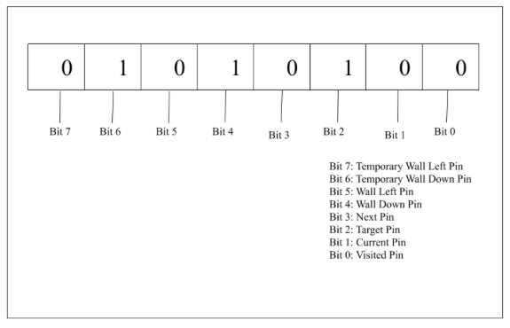For the wall information, whenever the corresponding bit is set, that would mean that there is a wall in that location. We also had “temporary” walls so that our search algorithm can avoid other robots-- these walls would be up temporarily so that our robot doesn’t go in that direction, and they would block off the location that corresponds to the other robot that was detected.
For the radio portion of the code, we decided to split up the transmission into four separate packets, each of which store 26 bytes (as we couldn’t send all 100 bytes at once-- the packet size isn’t large enough). The last byte (the 26th byte) is the byte that holds the number of the packet. In order to receive the entire maze, the base station will have to receive four separate packets. The 26th byte from each packet will be one of three integers (between 0 and 3 inclusive). The first packet should have its 26th byte be a zero, the second should have this byte be one, and so on until the fourth packet. If we receive all these packets in order, we combine them into a 100 byte buffer (using a call to the memset function) and set the appropriate signals that go to the FPGA. We define constants for things like the buffer size, the size of a single packet, and the number of packets needed to receive the entire maze so that our code is more readable.
The code that does the sending of packets to the base station is the code that runs on the robot Arduino. In order to make things as fast as possible, we wanted to make sure that we could concurrently send information to the base station while the robot was moving. To do this, we used non-blocking radio write commands. In the file “Middleware.cpp”, we have the functions that are needed for the robot to move, along with a few others. We decided that we would send information to the base station every time the robot was attempting to move forward. In the function called “advanceOne(RF24 *radio, char *data)”, we would not only make sure that the robot was moving forward, but also that the robot transmitted the entirety of the maze information to the base station. Since the “advanceOne()” function itself is blocking (there’s a loop in it that keeps running until the robot has finished advancing), we check to see whether we have transmitted the entirety of the maze information to the base station on the current iteration. If it hasn’t, we transmit the next packet, and increment the “num_packets_transmitted” variable. Once this variable reaches the value of the constant “NUM_PKTS”, the information transmission stops. We have four packets that we need to send (as discussed above), so NUM_PKTS = 4 in our code. Below is the portion of the “advanceOne()” method that we use to transmit the maze information over the radio chip:
if(num_pkts_transmitted < NUM_PKTS) { // if robot still needs to transmit packets...
if(current_time - last_transmit_time > TRANSMIT_INTERVAL) { // if a certain interval has pased since it last transmitted a packet...
last_transmit_time = current_time; // update last time a packet was transmitted
transmitPacket(radio, data, num_pkts_transmitted++); // transmit a packet to the base station
}
}
The function that we use to send information over the radio is called “transmitPacket()”. This function takes the maze information that we have, and the packet number of the transmission so that it can set the 26th byte in the transmission sequence appropriately. Afterwards, it sends this information using the radio’s “startWrite()” command. The code for this function is shown below:
void transmitPacket(RF24 *radio, char *data, uint8_t pkt_num) {
char tx_buff[RF_PKT_SIZE]; // payload buffer
radio->startListening(); // for some undetermined reason, radio only works if we start and stop listening before writing each packet
memcpy(tx_buff, data + pkt_num * (RF_PKT_SIZE - 1), RF_PKT_SIZE - 1); // copy a chunk of the maze data into the payload buffer
tx_buff[RF_PKT_SIZE - 1] = pkt_num; // mark the packet with its index in the frame (last byte of the packet)
radio->stopListening();
radio->startWrite(tx_buff, RF_PKT_SIZE); // send the packet
}
The code that does the actual receiving of packets is the same as in the example from the radio library that we are using (radio.read()). If we happen to miss one of these packets in the series of four that we are supposed to receive in order, our code just drops the entire maze on this iteration. This isn’t a big deal, as we will then update the GUI on the next time that the robot Arduino sends over the maze information. Below is a code snippet that shows the logic for keeping track of the information that the base station has already received and what it should be expecting next (we use state variable, “expected_packet_number”, to do this):
void loop(void) {
/* Program superloop */
if(radio.available()) { // if a new packet is available...
unsigned char recv_buff[RF_PKT_SIZE]; // buffer for receiving data from the radio module
radio.read(recv_buff, RF_PKT_SIZE); // read the packet
uint8_t pkt_num = (uint8_t)recv_buff[RF_PKT_SIZE - 1]; // extract its index
if(pkt_num == expected_pkt_num) { // if it matches the expected index...
memcpy(maze_buff + pkt_num * (RF_PKT_SIZE - 1), recv_buff, RF_PKT_SIZE - 1); // copy its data into the maze buffer
if(pkt_num == NUM_PKTS - 1) { // if it is the last packet in the frame...
for(uint8_t byte_num = 0; byte_num < NUM_PKTS * (RF_PKT_SIZE - 1); byte_num++) { // transmit the maze to the fpga
// if this is the first byte assert a synchronization signal
if(byte_num == 0) digitalWrite(SYNC_PIN, HIGH);
else digitalWrite(SYNC_PIN, LOW);
// output the byte on the parallel interface
digitalWrite(BIT7_PIN, maze_buff[byte_num] & (1 << 7) ? HIGH : LOW);
digitalWrite(BIT6_PIN, maze_buff[byte_num] & (1 << 6) ? HIGH : LOW);
digitalWrite(BIT5_PIN, maze_buff[byte_num] & (1 << 5) ? HIGH : LOW);
digitalWrite(BIT4_PIN, maze_buff[byte_num] & (1 << 4) ? HIGH : LOW);
digitalWrite(BIT3_PIN, maze_buff[byte_num] & (1 << 4) ? HIGH : LOW);
digitalWrite(BIT2_PIN, maze_buff[byte_num] & (1 << 2) ? HIGH : LOW);
digitalWrite(BIT1_PIN, maze_buff[byte_num] & (1 << 1) ? HIGH : LOW);
digitalWrite(BIT0_PIN, maze_buff[byte_num] & (1 << 0) ? HIGH : LOW);
delayMicroseconds(CLK_PER / 2); // hold the clock low for half a period
digitalWrite(CLK_PIN, HIGH); // generate rising edge
delayMicroseconds(CLK_PER / 2); // hold the clock high for half a period
digitalWrite(CLK_PIN, LOW); // make the clock low again
}
}
expected_pkt_num = (expected_pkt_num + 1) % 4; // update expected index of the next packet
}
else {
expected_pkt_num = 0; // if the packet index didn't match the expected one, abort the transmission and wait for a new one
}
}
}
In order to transmit all the maze information after receiving it all, our code checks if we have received the last packet and then sends the information on eight different pins that correspond the the byte of information for a single cell, as well as on two other pins. The other two pins are called the SYNC_PIN and the CLK_PIN in our code and they are just so that we can get the timing correct for the information-sending between the base station Arduino and the FPGA.
The FPGA takes in the maze information from the base station Arduino, and outputs the corresponding pixels on the VGA connection. Everytime the base station receives an updated maze, the 100 bytes that describe its tiles are directly forwarded to the FPGA through a parallel interface. The FPGA does not store pixels in a memory. Rather, it just stores these 100 bytes, and the logic to generate each pixel is simple enough that it can be done during the 25.17 MHz pixel clock cycle.
We couldn’t easily encapsulate the parallel communication in a module because Verilog does not support passing multidimensional arrays like our maze map as parameters. Since HDL isn’t the strong suit of any of our members, we just wrote that in the top-level file, “vga_driver.v”. On every FPGA clock cycle, we sample the clock generated by the Arduino, and if we see a rising edge, we sample the port and update one of the tiles in the maze memory. We keep a counter that gets reset whenever it reaches 100 in order to know which tile to update. The counter is also set to 1 whenever the synchronization signal we talked about earlier is asserted. This prevents disastrous error propagation in case we lose one or more clock cycles during a transmission. A very important aspect of parallel communication is synchronizing the clock and data to the FPGA clock before doing any sampling. To achieve this, we first pass the signals through two stage shift registers. Before we realized that we needed to do this, we kept getting erroneous data and missing clock cycles regardless of how slow we made the parallel clock. We now know that this was caused by metastability phenomena.
The logic for generating pixels from the maze data can be found in “tile_decoder.v”. This module takes the byte representing one of the tiles and the scanning point’s position within that tile, and outputs the corresponding pixel color. The two inputs are calculated from the absolute position of the scanning point on the screen. Effectively, the VGA driver specifies the position of a pixel on every clock cycle, and the decoder module calculates its color using the maze memory. The background color is calculated by looking at whether the tile has a special status (e.g. white for visited, red for target, etc.). If the tile contains a wall and the scanning point is within that wall, the decoder outputs the wall color. Otherwise, it outputs the background color. A blanking signal controlled by the VGA driver is also involved, since the decoder must output black if the scanning point is not within the active image area of the monitor. Initially, we were directly outputting the result of the decoder’s combinational logic to the monitor, and the resulting image contained weird artifacts. We later realized that this was caused by glitching, since the monitor wasn’t sampling synchronously to the FPGA clock. To solve this, we passed the output through a register. Flip-flop outputs never have glitching.
We were unsatisfied with the quality of the provided VGA driver, so we rewrote it in “vga_driver.v”. It plays a similar role, in that it generates the vertical and horizontal sync pulses and it outputs the position of the scanning point on the screen. However, the logic is now neatly organized into two interacting FSMs, one for scanning each line, and one for scanning the screen with lines. The timing intervals are now explicitly declared, with values for the front porches, the back porches, and the sync signals.
We only have one clock running the entire logic, the 25.17 MHz pixel clock that we generated from CLOCK_50 using a PLL. This simplifies the design because no extra synchronization is required.
The way we decided to handle other robots is that we would place a temporary wall between our robot and the other robot when running our path-finding algorithm. Then, we would find a path in that way, thus avoiding that robot since our robot will not travel into a wall. After that iteration of the algorithm, we would then remove the temporary wall and continue with the path-finding algorithm without that wall being there. Our base station reflects the existence of temporary walls or other robots as well, and this information is also output by the FPGA as a different color on our display, but that information is only useful for our own debugging purposes (it isn’t useful in the competition).
To achieve the goals detailed in the “Full Robotic Integration Section”, the only new circuit we had to add was the override button. Everything else was already functional and has been documented in the corresponding lab and milestone pages on the website. However, a number of new problems caused by the interaction of different circuits occurred and will be discussed now.
The first issue we encountered was not having enough pins on the Arduino to implement the button. Since we realized that the green LED will only have to light up once, at the end of the run, we came up with a scheme to use its pin also for sensing the button press. Before starting a run, the pin is made an input, and thanks to the LED, it is pulled down. Therefore, we have a valid input scheme if the button is connected to +5V on its other terminal. The LED will light up whenever the button is pressed, but that’s an acceptable inconvenience. When the robot is done, it makes the pin an output and sets it high. The LED lights up, and pressing the button has no effect.
Another problem is that the wall sensors created noise on the power supply, which completely overpowered the microphone signal. We easily solved this by moving them to our second power rail, a 5V motor supply generated from an extra 9V battery.
Finally, we had some other issues caused by switching to higher speed servos right before the competition. Upon starting from a standstill, the robot’s front lifted off the ground if we applied all of the power right away. Therefore, we had to ramp the speed, but this didn’t introduce too much complexity because we already had a customizable navigation algorithm. A greater problem is that the robot overshot after finding the next intersection using its third, wheel axle aligned line sensor. We moved that sensor forward, so the overshoot is taken into account and the robot now stops right at the intersection. However, when backing up, the overshoot is in the other direction, and in order to reacquire an intersection, we now have to move forward for a set time after backing up. Other changes were needed in order to make the line following more robust, such as remembering which sensor saw the line last, so the robot is able to recover even if it loses the line completely.
An important change we made to the code is switching to a superior tone detection algorithm. The proposed method of using an FFT requires a significant amount of memory, and the library used in lab allocates all of that memory statically, which means it can’t be used after the tone detection algorithm is no longer needed. Also, because memory is limited, the FFT length can’t be increased past a certain amount, which means the bins can’t be made arbitrarily narrow. The FFT also computes all of the DFT bins, despite us needing only the 950 Hz one. (More on that in Vlad’s discussion with Prof. Poitras on Piazza Post @26). Therefore, we implemented the Goertzel algorithm, which takes up no memory because the samples can be discarded as soon as they pass through its IIR structure. Therefore, we were able to increase the DFT length to 500 and make a very clear distinction between 950 Hz and other tones, and this paid off in competition.
A complete Integration test including robot detection and transmission of data from robot to Base Station is shown below:-
Additionally, this is how the final robot looks like:-
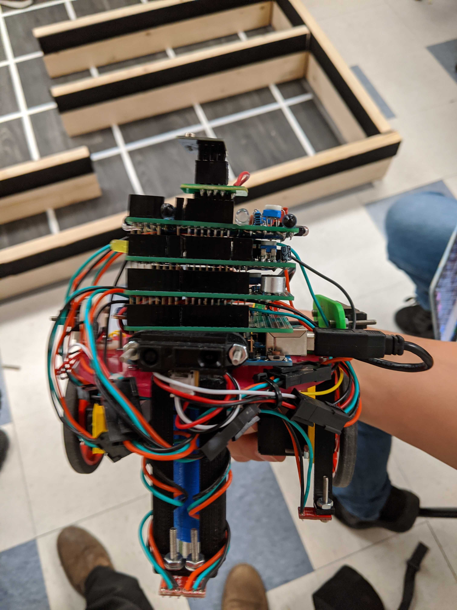 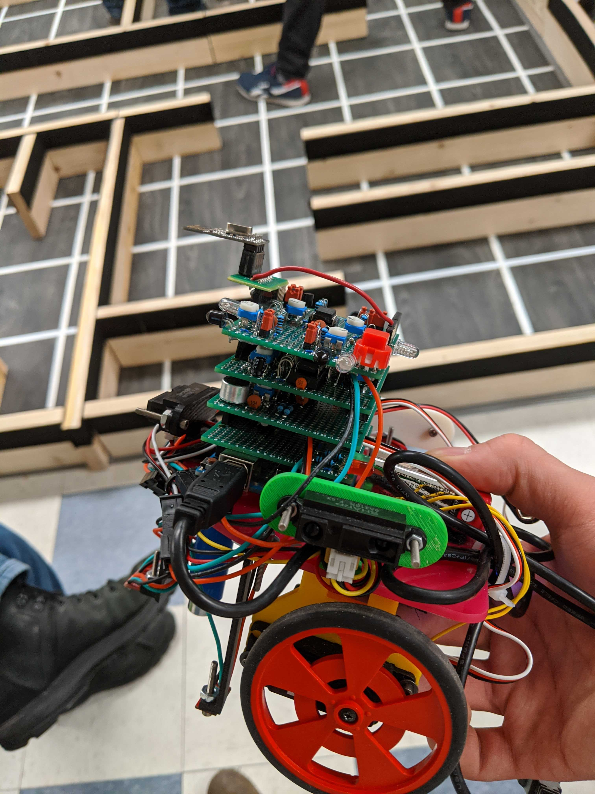Further, here are the CAD design of the 3D printed parts:-
The CAD design of the front sensor is as follow:-
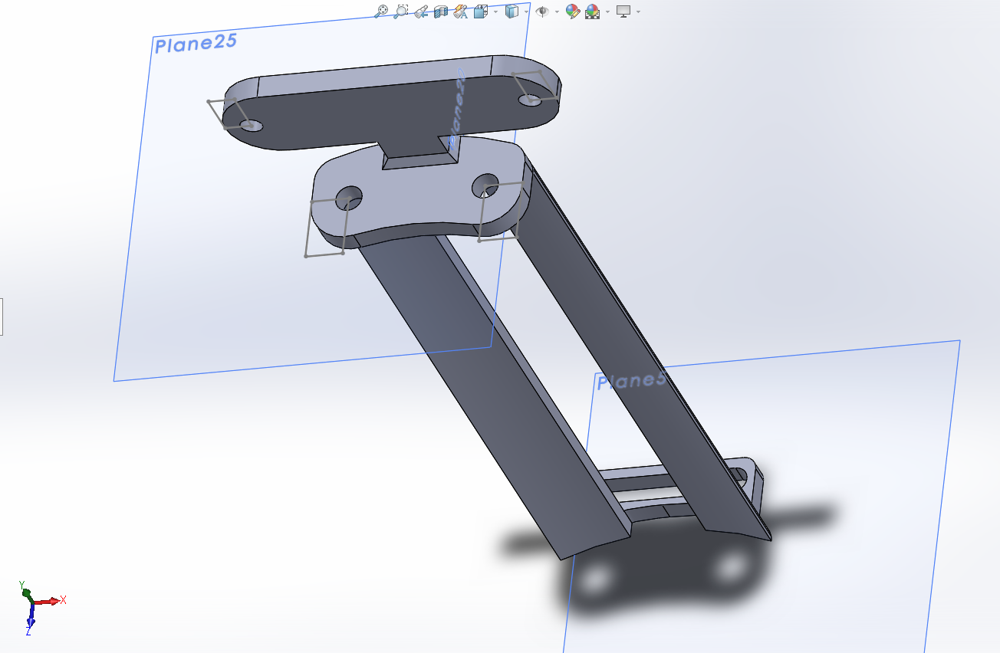 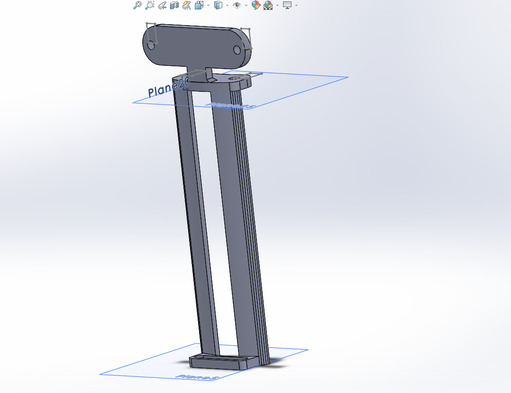The CAD design of rear line sensor is as follows:-
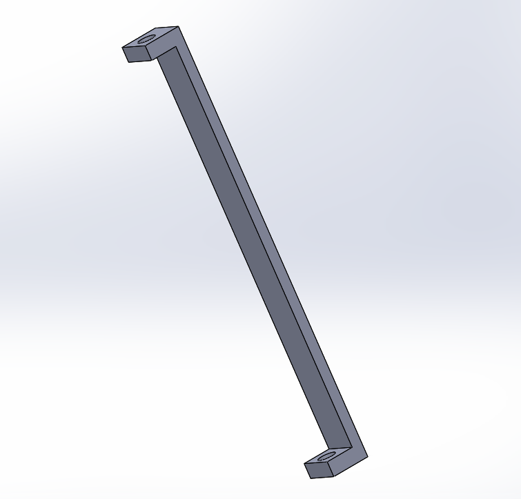No shipping charges from Amazon or Texas Instruments. Total cost: $121.26.
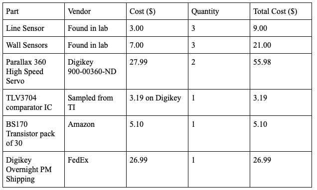The greatest problem we encountered with mapping the maze is the fact that there is little contrast between the playing surface and the white lines. Despite carefully tuning our line sensors and demonstrating a complete maze run the night before, the robot still erroneously detected or failed to detect some of the lines at the competition. This caused it to lose its position and made it unable to map the whole maze. We still took second place because our robot’s speed allowed us to attempt the maze multiple times. We suggest using a completely black mat in the future, because we consider the competition should be focused on developing efficient algorithms rather than painstakingly tuning the line sensors. Also, we found out just days before the competition that some teams had found high speed servos in lab, which gave them an unfair advantage over the others. In order to level the playing field, we incurred a $26.99 expedited shipping cost, which barely fit in our budget, and we had much less time to tune our line following algorithm for the new servos. We suggest letting everyone know that these servos exist from the beginning, and providing them to every team that is interested. Finally, there have been number of instances where our robot caused crashes only with some specific competitors, while succesfully avoiding all others. We suspect the IR emitters on some robots were not functional, or were improperly mounted, but we cannot know with certainty because there were no checks before the competition. We suggest implementing such checks, and not allowing offending robots to take part in the competition. In any case, the competition gives a purpose to this course and was the most enjoyable aspect of it.
View Lab 4 Code on GitHub
This Milestone involved adding line tracking and maze traversal features to our robot. Towards the end, we had to make our robot turn in figure 8. In order to facilitate collaboration and enforce modularity, we decided to split our code into three main parts: device drivers, middleware and mission strategy. We will describe each part in detail below, starting with the drivers. We also documented the code thoroughly with comments, since we believe this makes it easier to convey the details of our implementation.
For this milestone, the robot needed line following capability, which we implemented using three line sensors. Since we used the analog version of the sensors, the device drivers are just functions that perform an analog reading and compare the result to a threshold. If the result is below this threshold, the reflectance is high, and the corresponding function returns a value indicating that the sensor is seeing a white line. To establish the threshold for each individual sensor, we looked at the raw analog values corresponding to black and white and we chose the midpoint. In total, we have three sensors, two in the front for following the line, and one underneath the left motor for detecting line crossings. The placement of the third sensor allows us to be in the perfect position each time we execute a turn at a crossing.
Code Snippet:
bool checkLineLeft() {
return analogRead(LINE_LEFT_PIN) < LINE_THRESHOLD_FRONT; // white line detection
}
We also have servo driver functions, which remap desired speeds to the corresponding pulse lengths and create the required pulse trains for servo control using the Servo Arduino library. We preferred to use the writeMicroseconds() function instead of write() because it gave us direct control over the pulse lengths, making it easier to follow the servo datasheet and obtain a linear mapping. In the end, the mapping was [-100, 100] -> [1300 us, 1700 us].
Code Snippet:
void setSpeedLeft(int8_t spd) {
// map [-100, 100] -> [1300, 1700]
servo_left.writeMicroseconds(1500 + (int16_t)spd * 2);
}
Lastly, we have an init function for the drivers, which associates the servo objects to the corresponding pins and calls the servo control functions with 0 desired speed to make sure the robot is stopped upon startup.
Code Snippet:
void servoInit() {
// associate servo structures with corresponding control pins
servo_left.attach(LEFT_SERVO_PIN);
servo_right.attach(RIGHT_SERVO_PIN);
// halt the motors on startup
setSpeedLeft(0);
setSpeedRight(0);
}
Our initial task was to allow robot to navigate lines made out of electric tape on a flat surface.
There were four functions that we had to write here and they would be used where needed when implementing the full figure eight functionality. All of this was done in a cpp file called “middleware.cpp”. To use the driver functions and define all the middleware functions for reuse, we had to include two header files called “drivers.hpp” and “middleware.hpp” respectively (in addition to including Arduino.h).
The first function that was implemented here was the function that would allow the robot to move in a straight line (called moveForward), only stopping when it hits an intersection (using a function called halt(), described further down). In general (and for this function too), the functions that we implemented would only return a 1 once it finished what it was doing (for this function, it was when the robot reached an intersection). Otherwise (like while the robot is still going in a straight line), the function would return a 0. In the beginning, we had a variable called nav_mode that was set to -1. When the moveForward function was called first, the nav_mode variable would be checked. If it wasn’t 0 (meaning the moveForward function wasn’t called directly before this iteration of the function call), we would update a variable called nav_start_time with the current time (stored in a variable called current_time, which would get updated each time this function or any other movement function was called). The reason we wanted to update the nav_start_time variable is that we wouldn’t want the robot to detect the same intersection twice and return 1 right away. We defined a constant called MIN_ADVANCE_TIME and only when the difference between the current_time variable and the nav_start_time variable was greater than MIN_ADVANCE_TIME, would we even check to see that we had reached another intersection. If the robot was at an intersection, we would return 1, and otherwise, we would adjust the speed of the robot’s wheels using the methods setSpeedLeft(speed) and setSpeedRight(speed) to either turn towards the line or just keep going straight. In the case that the robot was exactly on the line (both sensors are on the line, which was checked using checkLineLeft() and checkLineRight()), then we would move forward at top speed (which we set through experimentation in a constant that we named MAX_SPEED). Otherwise, we would turn. We could turn left by setting the left wheel’s speed to be scaled from MAX_SPEED by a factor of (1/LINE_CORRECTION_FACTOR, where LINE_CORRECTION_FACTOR was another constant that we had defined through experimentation). At the end, we would return 0 (since the robot hadn’t encountered the next intersection yet).
The code is shown below:-
int moveForward() {
uint32_t current_time = millis(); //update current_time
// update nav_start_time if this is the first call
if(nav_mode != 0)
{
nav_start_time = current_time;
nav_mode = 0;
}
if(current_time - nav_start_time > MIN_ADVANCE_TIME) { // check for new intersection after moving away from current one
if(checkLineRear()) {
halt(); // halt at new intersection
return 1;
}
}
if(checkLineLeft() && checkLineRight()) { // check for perfect line alignment
// just advance full speed
setSpeedLeft(MAX_SPEED);
setSpeedRight(MAX_SPEED);
return 0;
}
if(checkLineLeft()) { // otherwise, check for deviation to the right
// turn left while continuing to advance
setSpeedLeft(MAX_SPEED / LINE_CORRECTION_FACTOR);
setSpeedRight(MAX_SPEED);
}
else { // otherwise, check for deviation to the left
// turn right while continuing to advance
setSpeedLeft(MAX_SPEED);
setSpeedRight(MAX_SPEED / LINE_CORRECTION_FACTOR);
}
return 0;
}
The next two functions were both very similar to each other (as one would make the robot turn left (turnLeft()), while the other would make the robot turn right (turnRight())). Similar to the moveForward() function, this would return 0 when the robot was in the process of making the turn, while it would return 1 once the robot had finished the turn. Also similar to the moveForward() function, a nav_mode of 1 would correspond to turning left, while a nav_mode of 2 would correspond to turning right. If we had passed an interval defined as MIN_TURN_TIME (a constant that we had determined through experimentation) we would check to see whether the robot had finished turning, and if it had, we would stop the robot (using halt() again) and return 1. We could check to see whether this interval had passed by comparing the current_time variable with nav_start_time (once again only updated if the function hadn’t been called consecutively). This part was the same for both robots. Otherwise, we would set the wheels speeds (using setSpeedLeft(speed) and setSpeedRight(speed)), so that we could turn one direction or the other. We defined a constant called TURN_SPEED here that would set the speed for turning (we found it through experimentation again). Then, if we wanted to turn left, we would set the left wheel’s speed to -TURN_SPEED and the right wheel’s speed to TURN_SPEED, and if we wanted to turn right, we would do the same but switch the speeds for the wheels.
Code Snippet (Just for turnRight() because of the similarity between the two functions):
int turnRight()
{
uint32_t current_time = millis(); //update current_time
// update nav_start_time if this is the first call
if(nav_mode != 2)
{
nav_start_time = current_time;
nav_mode = 2;
}
if(current_time - nav_start_time > MIN_TURN_TIME) { // check for new line after turning away from current one
if(checkLineLeft() || checkLineRight()) {
halt(); // halt at new line
return 1;
}
}
// turn right in place
setSpeedRight(-TURN_SPEED);
setSpeedLeft(TURN_SPEED);
return 0;
}
The last function that we had to define was one that would stop the robot (called halt()). This function was very simple, as all we did was reset the nav_mode (to -1) and then set the speed to each of the wheels to 0 (using setSpeedLeft(speed) and setSpeedRight(speed) again).
void halt()
{
nav_mode = -1;
// stop servos
setSpeedLeft(0);
setSpeedRight(0);
}
The demo for line following is as follows:-
For figure 8 motion, we already had the code for line detection / moving written in drivers and middleware cpp files. We just had to keep track of intersections (places where the ending of the electric tape was encountered) and accordingly call the respective functions for turning of the robot in milestone1.ino.
We were able to achieve this by defining switch statements that would accordingly let us jump to specified state (either turn right or left) based on intersection counts.
For instance, in the code shown below:-
Code Snippet:-
switch(mode) { // navigation FSM
case 0: { // advancing along line state
if(moveForward() == 1) { // call middleware. returns 1 when new intersection reached
intersection_count++;
if(intersection_count == 8) { // robot is back where it started
intersection_count = 0;
}
if(intersection_count == 0 || intersection_count == 1 || intersection_count == 6 || intersection_count == 7) { // turn right at these intersections
mode = 1;
}
else { // turn left at the others
mode = 2;
}
}
break;
}
We are in the case where the robot is following the line. If the moveForward() function (defined in middleware) returns 1 then we have encountered an intersection. Hence, in this case, we would just increment the intersection count. Now, if this value reaches 8, we reset it. Otherwise,we would turn right or left based on the value stored in intersection count.
Now as case statements for right and left turns are similar, we would just cover the case for right turn.
The code for this case statement is shown below:-
if(turnRight() == 1) { // call middleware. returns 1 when aligned to new line
mode = 0; // start advancing
}
break;
Now, in this code we have that when the robot is signalled to be right, then we call the middleware function turnRight() to see whether our robot has aligned with the straight line after turning or not. If so, then we would just jump back to case 0 that was to follow the straight line. additionally, we know that loop() function for arduino would just repeat this code. hence, we would be continuously be checking for turnRight() to be 1 to advance to a different state.
The demo for Figure 8 movement is as follows:-We strategically placed the 3 IR sensors around the robot to enable line following and turning. We used two sensors in the front of the vehicle to allow for line following. The sensors are angled together so both can “see” the line at the same time. If both sensors see the line, the robot goes forward, if one sensor (example right sensor) no longer “sees” the line the robot turns the opposite direction (left). Our group discussed the option of adding more sensors to the front of the vehicle in order to have more granular control of how fast we correct, but we decided it was not worth the increaces in hardware, cost and implementation time. The third sensor is placed on the line of the rear axle closer to the left rear wheel. This sensor does not see the line that the vehicle is following. It was crucial that the sensor was on the same axle length as the rear wheels. With this positioning we can stop the vehicle when it detects a perpendicular line and then simply rotate 90 degrees in place. If the sensor was not in line with the axle, then the robot may have to turn more or less than 90 degrees in order line up correctly with the line. Depending on costs and rules of the competition we may add another sensor also on the rear axle but on the right side of the vehicle for redundancy.
In this milestone, our main goal was to allow the robot to succesfully circle around arbitrary set of walls. Additionally, we had to implement different ways of signalling when our robot detects a wall based on different scenarios.
In the drivers (“Drivers.cpp”), the only changes that we had made for this milestone were for the LEDs that we would use to indicate the three cases that needed to be handled for wall following: wall to the right and in front, wall to the right but not in front, and no wall to the right. We had three different LEDs that we would want to control (red, blue, and green), and we made two functions for each of them (one for turning the LED on, and another to turn the LED off). After declaring pins that would correspond to the digital pin that we were using for each of the LEDs, we would perform a digitalWrite() to the LED pin, which would either be HIGH (turning the LED on), or LOW (turning the LED off). Functions for turning on and off the LEDs (only for the red LED since the functions for the other LEDs are very similar) are shown in the code snippet below:
void redLEDOn(){
digitalWrite(RED_LED_PIN, HIGH);
}
void redLEDOff{
digitalWrite(RED_LED_PIN, LOW);
}
The last two functions that we implemented in this file were for getting the distance from the two sensors that we had on the robot. The infrared would return high values for objects closer to it and lower values for objects farther away from it, so we used the transfer function that we obtained from the datasheet to convert the values that the sensor gave into cm. We would read the reading from the infrared sensor using the method analogRead(INPUT_PIN). A code snippet just for the front sensor (in the function getDistanceFront()) is shown below:
float getDistanceFront() {
return 2457.6f / analogRead(DISTANCE_FRONT_PIN) - 0.42f; // transfer function obtained from datasheet
}
(b) Changes made to the Middleware
In the file middleware file (“Middleware.cpp”), we implemented the functions that we would need for making turns, moving forward by one space, and checking to see whether there is a wall to the front or to the right (only these directions are needed for the right hand wall following functionality that we would like to implement).
First, we will describe the functionality that we changed for turning left, turning right, and moving forward. At a high level, one major design decision that we made for this part was to make each of the moving functions blocking because we realized there really wasn't much else we could do while navigating. To do this, we used infinite loops that would run until the robot had finished whatever functionality (it would always finish at an intersection) that it was supposed to do. The first method that we changed was the one to move forward. We changed the name to “advanceOne()” to make the name more accurate to the functionality that we were implementing. The changes to this method involve using an infinite loop to keep moving forward (and adjust if it wasn’t completely on the line using the same logic as in milestone 1) until it reached a new intersection. We would detect for a new intersection using the same method as in the previous milestone (we would see whether a certain time interval had passed (defined by “MIN_ADVANCE_TIME”, which we found through experimentation from before) and only break from the loop once that time interval has passed and we see another intersection). To make sure that adding other code to the loop won't affect navigation, we restricted the actual execution to only run at a fixed interval of 10 ms. Below is a snippet of the code for advanceOne():
void advanceOne() {
uint32_t current_time = millis(); // update current_time
uint32_t nav_start_time = current_time; // time when robot began moving forward
uint32_t last_nav_update_time = 0; // last time robot handled navigation
while(1) {
current_time = millis(); // update current_time
if(current_time - last_nav_update_time > NAV_UPDATE_TIME) { // handle navigation at predefined intervals to avoid unexpected effects from cpu loading
last_nav_update_time = current_time;
if(current_time - nav_start_time > MIN_ADVANCE_TIME) { // check for new intersection after moving away from current one
if(checkLineRear()) { // exit if robot is at new intersection
break;
}
}
if(checkLineLeft() && checkLineRight()) { // check for perfect line alignment
// just advance full speed
setSpeedLeft(MAX_SPEED);
setSpeedRight(MAX_SPEED);
}
else if(checkLineLeft()) { // otherwise, check for deviation to the right
// turn left while continuing to advance
setSpeedLeft(MAX_SPEED / LINE_CORRECTION_FACTOR);
setSpeedRight(MAX_SPEED);
}
else if(checkLineRight()){ // otherwise, check for deviation to the left
// turn right while continuing to advance
setSpeedLeft(MAX_SPEED);
setSpeedRight(MAX_SPEED / LINE_CORRECTION_FACTOR);
}
}
}
halt(); // halt at new intersection
}
The next two functions that control the movement of the robot are the turning functions. For each of these functions, the logic that we changed is the exact same (we didn’t change anything about the speeds of turning). We made the loop infinite and used the constant “MIN_TURN_TIME” to check whether a turn had finished and we were back at an intersection. When this was done, we would break from the loop. This loop would also only execute once every 10 ms using the same logic as in the advanceOne() method. Below is a snippet of the code turnRight (turnLeft is the exact same other than the speeds of the wheels):
void turnRight() { // turn right in place
uint32_t current_time = millis(); //update current_time
uint32_t nav_start_time = current_time; // time when robot began turning
uint32_t last_nav_update_time = 0; // last time robot handled navigation
while(1) {
current_time = millis();
if(current_time - last_nav_update_time > NAV_UPDATE_TIME) { // handle navigation at predefined intervals to avoid unexpected effects from cpu loading
last_nav_update_time = current_time;
if(current_time - nav_start_time > MIN_TURN_TIME) { // check for new line after turning away from current one
if(checkLineLeft() || checkLineRight()) { // exit if robot is at new line
break;
}
}
// turn right in place
setSpeedRight(-TURN_SPEED);
setSpeedLeft(TURN_SPEED);
}
}
halt(); // halt at new line
}
The last two methods we made were completely new for this milestone, but their implementations were very simple. The methods are called “checkWallFront()” and “checkWallRight()”. Since we had two infrared sensors on our robot, we would need methods that could check to see whether we were sufficiently close to walls on either side. We defined constants called “GRID_UNIT_LENGTH” which we actually measured in cm. Then, only if the robot was within half that length to a wall (we used the appropriate distance methods that were declared in the driver class (getDistanceFront() and getDistanceRight())), would either of the methods return true. Otherwise, the methods would return false. As can be seen from their names, the checkWallFront() method would be for the front infrared sensor, while the checkWallRight() method would be for the right infrared sensor. Below is a code snippet of checkWallFront (since checkWallRight is very similar):
bool checkWallFront() {
// robot is facing a wall if it sees something closer than half the grid unit length
return getDistanceFront() < GRID_UNIT_LEN / 2.0f;
}
(c) Addition of Milestone2.ino
We implemented the final updated drivers and middleware code in Milestone2.ino file for right hand wall following of our robot and signalling on wall detection. For this we initialized the LEDs and servos by calling the respective functions defined in midleware.cpp and drivers.cpp file. Then, inside the loop function we performed a couple of checks to model different scenarion when we detect a wall.
The first two cases are when the robot has a wall to its right. If there is also a wall in front (signified by red LED), it must turn to the left. Otherwise (green LED), it should just continue advancing. -
if(checkWallRight()) { // there's a wall on the right
if(checkWallFront()) { // ...but there's also a wall blocking the path in front
redLEDOn(); // light red indicator
turnLeft(); // turn left
redLEDOff();
}
else { // all is fine, robot can go forward
greenLEDOn(); // light green indicator
advanceOne(); // move forward
greenLEDOff();
}
}
If there is no wall to the right (blue LED), the robot must turn to the right and advance one unit regardless of any other conditions. -
else { // no wall on the right
blueLEDOn(); // light blue indicator
turnRight(); // turn right
advanceOne(); // move forward
blueLEDOff();
}
At first we decided to try out our robot on a square maze to check whether the LED signals where updating as expected and there were no delays caused. The demo for the same is shown below :-
For the second challenge, we decided to test our robot in a pre-defined maze. This would simulate something similar to a maze in the final competition. The demo for the same is shown below: -
We finally thought of going a step forward and simulate how our robot would work depending on obstacles (in this case walls) introduced at random instances. The demo for this is as follows: -
The requirements for Milestone 3 are to demonstrate successful maze navigation and avoidance of other robots. This page describes our Greedy navigation algorithm and the hardware and software we implemented to avoid other robots. Since we believe our current approach strikes a good equilibrium between complexity and performance, we are planning to use it during the final competition. All that is left to do is display the maze on the monitor.
Maze Navigation
(Robot spins and blinks LEDs randomly to signal that all intersections have been explored)
Robot Avoidance
Since we were unable to find other robots with IR capability during our lab session, we simulated IR signals using a flashlight. A red LED lights upon detecting other robots.
Navigation Algorithm
We implemented a Greedy algorithm. That is, whenever the robot stops at an intersection, it calculates the closest unexplored intersection taking into account its current knowledge about the walls on the map. It then performs a step towards that location and the cycle repeats. Repeating the calculation every time gives us a lot of flexibility. We never need to memorize the way, or adjust it if we encounter another robot - we just put up a temporary wall and recalculate. Compared to DFS, our Greedy approach performs at least as well in all cases, but is superior on graphs that contain cycles. DFS is never able to backtrack through a cycle, and that may be the shortest path to get back in a position to explore other branches. Our algorithm always takes the shortest path to unexplored nodes.
In order to find the optimal path to the closest unexplored node, the robot does a "mental" BFS starting from its current position. Once a reachable unexplored node is found, BFS guarantees that it is indeed the closest. At that point, the robot just "mentally" backtracks to its current position and proceeds to take the first step towards the target. The real code is too complicated to explain here, but is thoroughly documented via comments. Instead, here's the heart of the Greedy algorithm in pseudocode:
robot reached an intersection
check if unexplored intersection - remember the walls and mark explored if yes
add current node to a fifo
while there are still nodes in the fifo:
take a node from the fifo
check if it is an unexplored node
if yes, we found the closest unexplored node:
destroy the fifo and the graph, end the search, take a step towards it
otherwise:
check whether node to its front is reacheable and not yet analyzed - add to fifo if yes
check whether node to its left is reacheable and not yet analyzed - add to fifo if yes
check whether node to its right is reacheable and not yet analyzed - add to fifo if yes
check whether node to its back is reacheable and not yet analyzed - add to fifo if yes
if we still couldn't find any unexplored nodes, job is done
By adding the front node first to the fifo every time, we make the robot prefer to explore nodes which require less turns, should multiple unexplored nodes be at the same distance. It takes much less time to execute a turn than to advance one grid square, but on open ground, we would much rather explore in a spiral than snake through the nodes from one end to the other.
Maze information data structure
We are storing knowledge about the maze entirely on the robot Arduino in a matrix that contains elements we call "nodes". The position of each node in the matrix corresponds to its position in the maze. Since we implemented Goertzel's Algorithm for tone detection and we don't need to worry about the memory footprint of the FFT library, we have ample storage space in the SRAM. Each node contains one byte of information, and two other attributes - parent and fifo_next. "parent" enables us to build the graph during each BFS search and backtrack to the current position once we found a target. "fifo_next" is used in order to create a fifo queue - the linked list characteristic of BFS traversal. These two attributes are reset upon every cycle, when a new BFS is performed. The knowledge byte is structured as follows:
msb -> node visited?
6 -> node is current node?
5 -> node is the target?
4 -> node is the next step towards the target?
3 -> node has a wall at its bottom?
2 -> node has a wall to its left?
1 -> node has a temporary wall (robot) to its bottom?
0 -> node has a temporary wall (robot) to its left?
(Note that each intersection can only be said to own two walls. The other two are stored in the nodes corresponding to adjacent intersections)
Since STL queues cannot be used on Arduino, we had to implement our own fifo as previously mentioned. Fortunately, only two simple functions are required. One to push elements to the back, and one to pop and return the front. Here's the push function, for example:
void enqueue(node *nd, node **fifo_front, node **fifo_back) {
/* Add a node to the fifo queue */
if(*fifo_back) { // if the queue is not empty...
(*fifo_back)->fifo_next = nd; // add the node to its back
}
else {
*fifo_front = nd; // otherwise make the node its front
}
*fifo_back = nd; // make added node the new back
}
Avoiding other robots
To avoid robots, whenever we are advancing, we are checking our front-facing phototransistors. If something is detected, we follow the line in reverse back to the intersection we just left. Then, we merely put up a temporary wall blocking that path, and we let the Greedy algortihm do its thing. It will either find another path towards the target, or choose another target altogether. If all other nodes are explored and the target is unreachable, the algorithm is configured to just retry to take the same path forever. The temporary walls are removed once a new step has sucessfully been taken, regardless of the target.
IR Shield
We added a new shield, which contains four IR lights and 4 phototransistors - two at the front and one of each side. The side phototransistors are used only to elliminate the possibility of mistaking other robots for walls to the right or to the left. A wall is only marked if the distance sensor is triggered and the IR detection is not. Same on the front.
The front IR phototransistors are connected in parallel and amplified by the same amplifier, but located as far apart as possible. We believe this will improve the field of view. The amplifier is similar to the non-inverting design we used for the microphone, but DC coupled, referenced to 5V, and with lower gain. The 100k biasing resistors and the 10uF capacitor are artifacts from the mistaken initial design, in which the amplifier was AC coupled. The capacitor is shorted but left on the board, in case the instructors decide to require modulation on the IR lights, like in previous years.
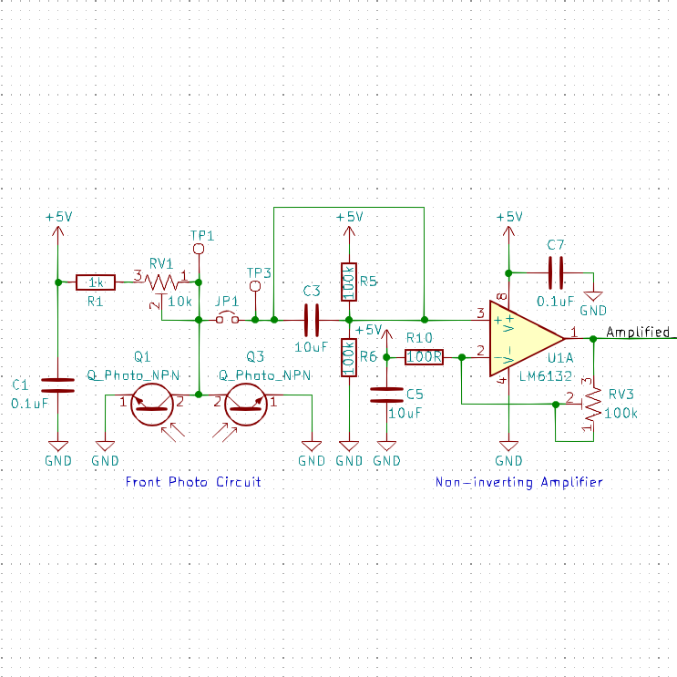The side phototransistors are also connected to the same amplifier and analog input, but are individually addressable. Instead of being permanently grounded at the emitter, like the front ones, they can be selectively grounded or left floating by using two digital pins. We chose this multiplexing scheme because we ran out of analog inputs on the Arduino:
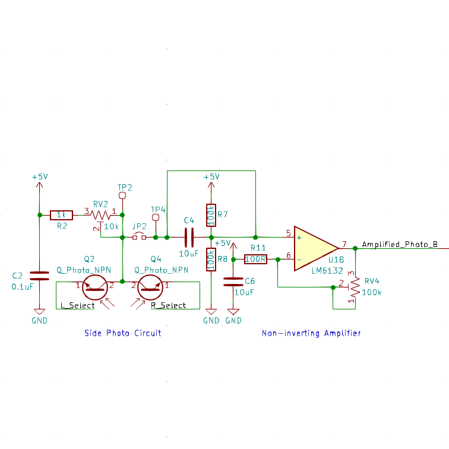Since we wanted to be able to control our lights, and turn them off while trying to sense other robots, we connected them through a transistor attached to a digital pin:
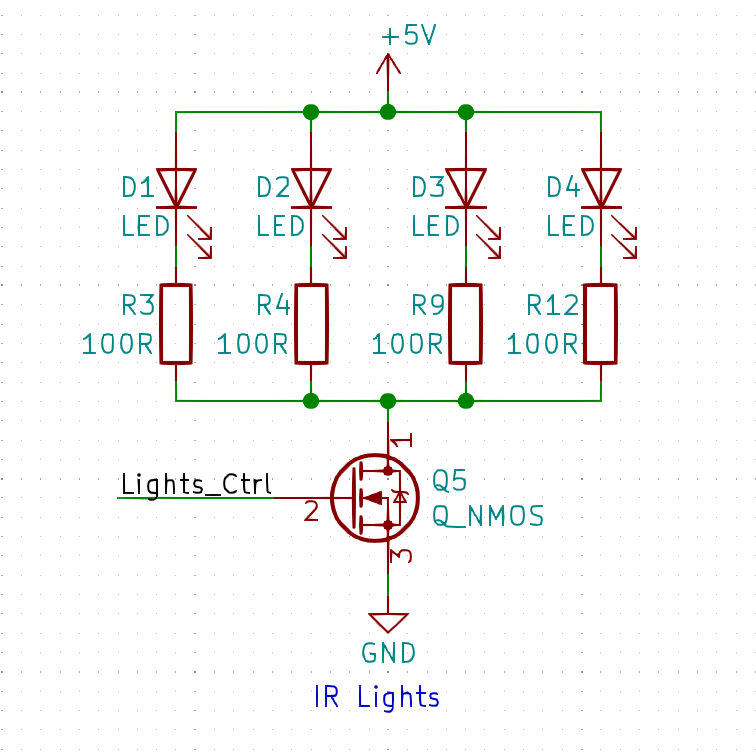Drivers
The function for reading the front sensors is straightfoward because no multiplexing is involved. On the other hand, to read a side sensor, its "Select" pin must be made low impedance and low first. Further complications arise because the "Select" pins are also used by the Arduino for serial communication, so serial must first be turned off. The phototransistors also take a while to stabilize after being grounded, so adding a delay is necessary. Here's a code snippet:
Serial.end(); // need to use serial pins
// select the left IR sensor by connecting the phototransistor to GND
pinMode(IR_L_SEL_PIN, OUTPUT);
digitalWrite(IR_L_SEL_PIN, LOW);
irOff(); // turn off own lights
delayMicroseconds(200);
uint16_t ret = analogRead(IR_SIDE_PIN); // read the shared input pin
irOn(); // turn lights back on
pinMode(IR_L_SEL_PIN, INPUT); // deactivate left IR sensor by leaving its phototransistor floating at one end
Serial.begin(9600); // turn serial back on
return ret;
To ensure that robot detection performs reliably under any lighting conditions, we take a baseline reading upon startup and set our detection threshold relative to that reading.